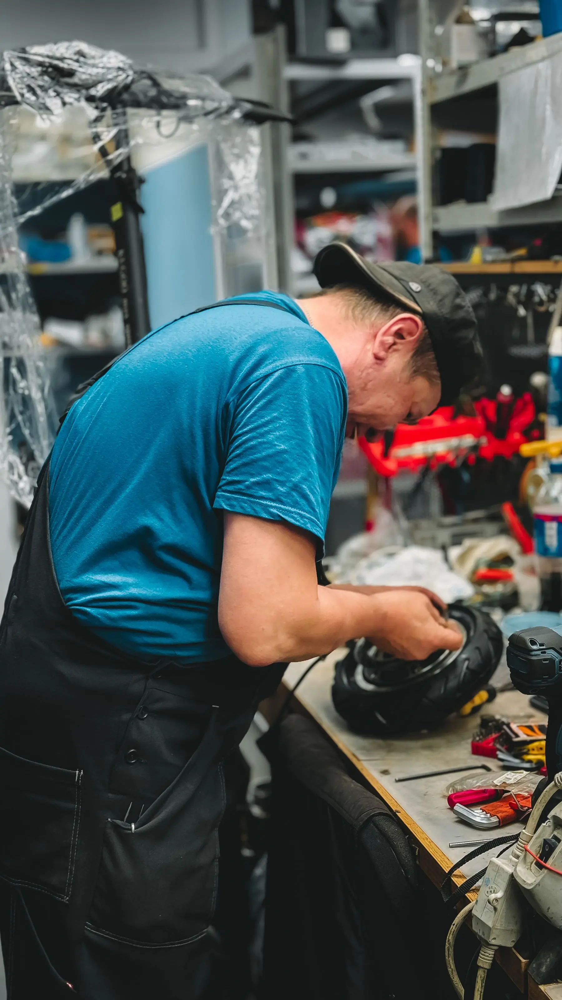
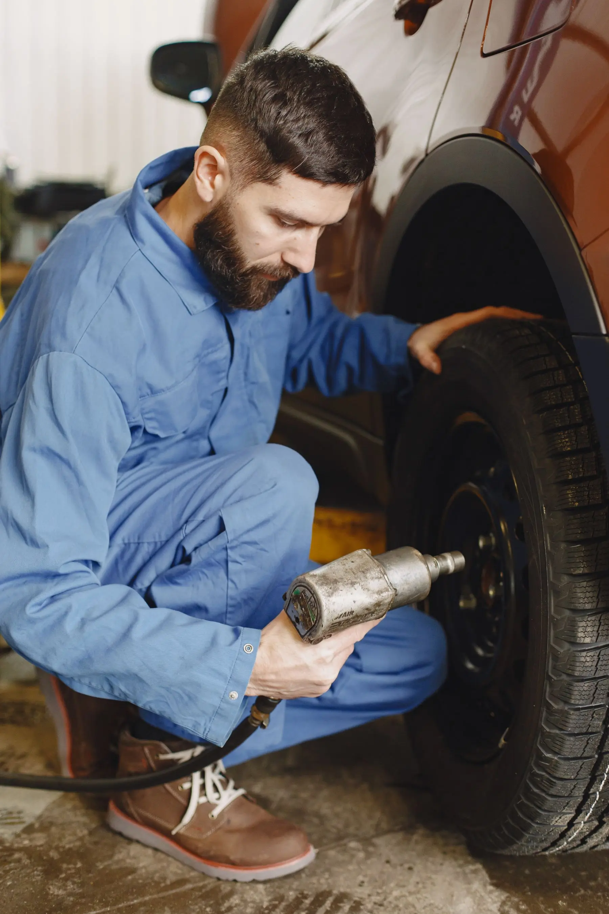

Nails & Screws
A visible puncture may be repairable depending on the location and condition of the tire.

TIRE REPAIR · PROBLEM → SOLUTION
For a puncture, leak or tire that keeps losing air, Tires 4 Less can inspect the tire and determine the right next step. Use Tire Repair when you can safely reach a shop; use 24/7 Roadside Assistance if the vehicle cannot safely continue.
COMMON TIRE PROBLEMS
A flat tire is not one single problem. Common symptoms are separated so you can start with what is actually happening before the shop inspects the tire.
A visible puncture may be repairable depending on the location and condition of the tire.
Pressure dropping over time can come from a puncture, bead area, valve or another source that needs inspection.
Cuts, bulges, sidewall damage or other visible issues should be checked before you keep driving.
If the tire will not hold pressure, the safest next step is inspection rather than repeatedly adding air.
REPAIR VS REPLACE
The puncture or damage location, the tire condition and the inspection determine whether repair or replacement is the right next step. Not every damaged tire can be safely repaired.
REQUEST AN INSPECTIONDamage location matters when determining whether repair is appropriate.
Overall tire condition matters just as much as the puncture itself.
Repeated pressure loss is a reason to stop guessing and have the tire checked.
Used and New Tires provide separate replacement paths when repair is not the right answer.
HOW IT WORKS
Start with the tire problem, let the shop inspect the tire, then follow the repair or replacement recommendation based on its actual condition.
Nail, leak, pressure loss, flat or visible damage.
The shop checks the tire and identifies the likely source of the problem.
If repair is not appropriate, move into Used Tires or New Tires.
SIGNS YOU NEED TIRE HELP
REAL TIRE REPAIR WORK
From damage inspection to the repair or replacement decision, the specific tire determines the next step.
VIEW OUR WORK →
READY TO DRIVEAT THE SHOP OR STUCK AWAY FROM IT?
If you can safely get to a shop, use the Tire Repair request. If you are stranded or cannot safely continue, use the 24-hour Roadside path instead.
Use the repair request and choose a Tires 4 Less location.
REQUEST SHOP HELPCall and tell the team where you are, what you’re driving and what happened.
CALL (980) 319-0381TIRE REPAIR QUESTIONS
Quick answers about Flat Tire Repair, based on the current Tires 4 Less service and location rules.
No. The specific damage, location and condition of the tire must be inspected before the shop can recommend repair or replacement.
Use Tire Repair when you can safely reach a shop. If the vehicle cannot safely continue because of the tire problem, call 24/7 Roadside Assistance at (980) 319-0381.
Send the vehicle, tire problem or symptoms, preferred shop and preferred date/time.
Yes. Pressure loss can involve the tire, valve, wheel/bead area or another issue, so the shop needs to inspect the specific tire and wheel.
TPMS Sensor Replacement, Relearn & Programming are confirmed Tire Services and can be requested separately.
TIRE DOESN’T FEEL RIGHT?
Describe the problem and choose a shop, or call Roadside if you cannot safely continue.